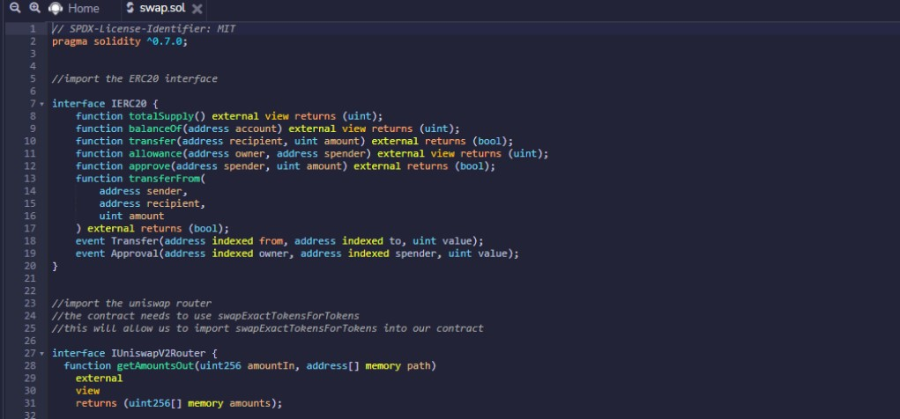
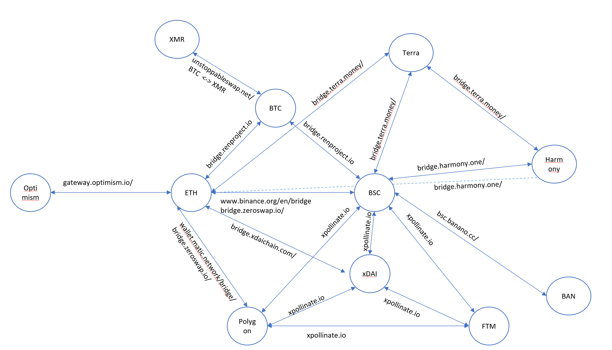
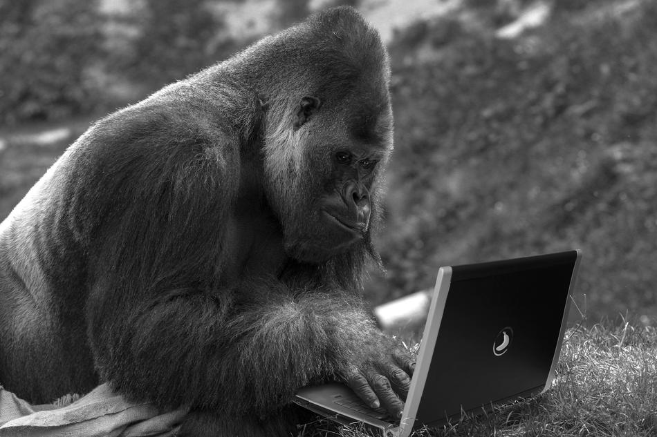

Baboon's Bazaar
ApeCoin swapping is performed in the Baboon's Bazaar. The current bazaar is a smart contract based on Uniswap's decentralized finance protocol for token exchange. When the liquidity pools are completed, you will be able to exchange APE for any Ethereum based tokens available in the pools for minimum gas. Future expansion plans include APE NFT's, dApp gaming, and aBTC, an ERC-20 token that represents BTC on the Ethereum blockchain.
Can APE transact BTC? Currently, APE is only a testnet product we have not been able to find a testnet that supports the hybrid BTC/ETH wallet required to create the Ethereum network bridge. We believe that running BTC test networks and faucets have long term costs that limit desire of the hosts to expand into cross-chain products, as the testnets do not generate revenue.
As your self-appointed representatives, we will continue to diligently throw banana peels at the internet until we have this resolved... 